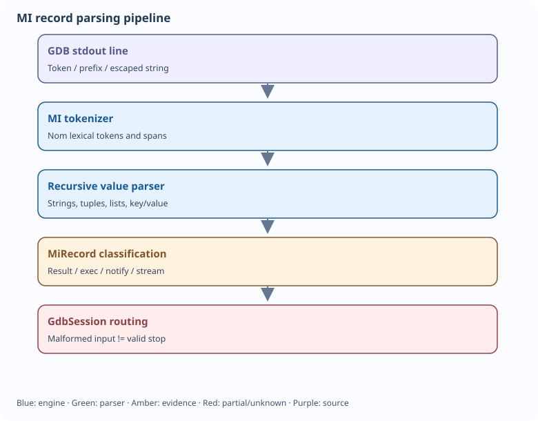

25 · GDB/MI2 lexer and record parser #
Key terms #
| Term | Meaning |
|---|---|
| Lexer | The first pass that splits characters into pieces: numbers, commas, quoted strings, braces. |
| Record | One parsed GDB message. ^done is a command result; *stopped reports the program stopped. |
>
The big picture #
src/mi_parser.rs decodes one complete line of GDB's machine interface into a typed MiRecord.
- It is not the Trace Parser's JSON reader. It parses debugger protocol syntax before any engine evidence exists.
- The caller in
src/gdb_mi.rssupplies newline-terminated lines from GDB's stdout. - Malformed input is logged, never converted into a stop.
Part 1 · Tokens and typed values #
| Type | Location | Represents |
|---|---|---|
Token | src/mi_parser.rs:55-73 | An optional numeric command token, MI punctuation (^ * = ~ @ & , { } [ ]), a decoded quoted string, or a bare identifier |
MiValue | :80-85 | A constant, a tuple of results, or a list |
MiResult | :88-92 | A variable=value binding |
MiListItem | :96-99 | Distinguishes a plain list value from an inline result |
MiRecord | :117-137 | Result, Exec, Notify and Stream { Console | Target | Log } variants |
The parser deliberately preserves unknown record classes and fields instead of discarding them. Protocol extensions stay visible, without the engine inventing an interpretation.
Part 2 · Lexing #
| Function | Location | Job |
|---|---|---|
lex_line(input: &[u8]) -> Result<Vec<Token>, MiParseError> | src/mi_parser.rs:361-390 | Skips ASCII whitespace, tracks byte offsets for errors, repeatedly applies next_token |
next_token(input: &[u8]) -> IResult<&[u8], Token> | :340-358 | Tries number, quoted string, identifier, then each punctuation token |
lex_quoted_string | :259-329 | Decodes C-style escapes |
lex_ident / lex_number | :216-258 | MI identifier characters / the decimal command prefix |
Escapes decoded: \n, \r, \t, \\, \", \', \e, \b, \f, \v, \a, \0, and two-digit \xHH.
- An unknown escape degrades to the escaped character.
- An unterminated string is an error.
The GDB reader adds a separate 16 MiB line bound and UTF-8-lossy conversion before calling parse_line (src/gdb_mi.rs:2302-2323). The parser itself expects a complete line; a partial line must never be parsed as a record.
Part 3 · Recursive-descent parsing #
Signature: pub fn parse_line(line: &str) -> Result<Option<MiRecord>, MiParseError> (src/mi_parser.rs:559-637)
Blank lines and (gdb) prompts return Ok(None). Otherwise it lexes, optionally consumes a leading number as the token, then dispatches on the first punctuation:
| Prefix | Produced record |
|---|---|
^class,... | MiRecord::Result |
*class,... | MiRecord::Exec |
=class,... | MiRecord::Notify |
~"text" | console stream |
@"text" | target stream |
&"text" | log stream |
The helper functions #
| Function | Location | Requires / accepts |
|---|---|---|
expect_class | :639-647 | An identifier |
parse_to_end | :665 | Zero or more comma-separated result bindings |
parse_result | :474-493 | name=value |
parse_value | :428-471 | A quoted constant, tuple, list, or bare identifier |
parse_result_list | :496-521 | The MI list-of-results comma forms |
parse_list_items | :524-557 | Disambiguates name=value from a plain value by looking one token ahead |
Worked example #
This is an illustrative MI fragment, not captured output:
4^done,frame={level="0",func="main",file="main.c",line="7",address="0x401136"}| Stage | What happens |
|---|---|
| Lexer | Produces Number(4), Caret, Ident("done"), Comma, Ident("frame"), Equal, LBrace, then the quoted fields and separators |
parse_line | Consumes the token, emits a Result with token Some(4) and class done, stores a tuple under frame |
gdb_mi::route_record | Sends it only to the pending command 4 |
A following *stopped,reason="end-stepping-range",frame={...} is an Exec record. It is delivered through the asynchronous stop channel and can never acknowledge command 4.
Failure behavior and tests #
MiParseError distinguishes (src/mi_parser.rs:34-53):
- unterminated strings,
- unexpected tokens,
- trailing characters,
- unknown records, and
- token overflow.
The GDB reader logs the line and error in a bounded console buffer and continues. A malformed line never fabricates a frame or a completion. EOF fails all pending commands (src/gdb_mi.rs:2328-2337).
Tests cover simple, result, exec, notify and stream records; empty containers; deep nesting; escapes; unknown classes; real GDB transcript fixtures; whitespace; token overflow; and seeded mutations (src/mi_parser.rs:699-1043). They validate syntax preservation. They do not claim GDB produced a particular record in a live session.
See the GDB controller for token routing and stop consumption.
Diagram notes #
| Diagram | What it shows |
|---|---|
| MI parsing pipeline  | Lexing, recursive value parsing, typed record classification and caller routing. |